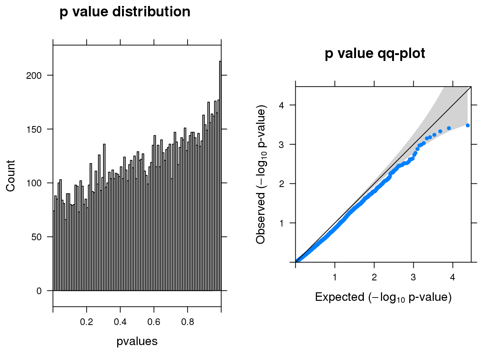
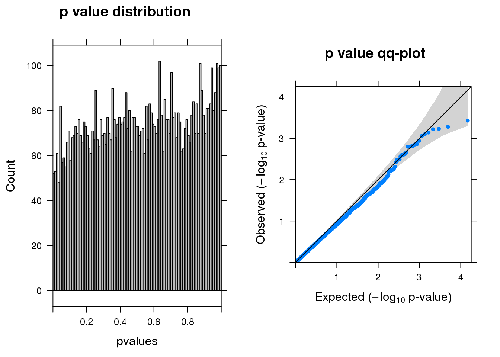

Differential expression analysis–MAST cpm det mode
Siming Zhao
2019-03-25
Last updated: 2019-03-26
Checks: 5 1
Knit directory: cropseq/
This reproducible R Markdown analysis was created with workflowr (version 1.2.0). The Report tab describes the reproducibility checks that were applied when the results were created. The Past versions tab lists the development history.
The R Markdown is untracked by Git. To know which version of the R Markdown file created these results, you’ll want to first commit it to the Git repo. If you’re still working on the analysis, you can ignore this warning. When you’re finished, you can run wflow_publish to commit the R Markdown file and build the HTML.
Great job! The global environment was empty. Objects defined in the global environment can affect the analysis in your R Markdown file in unknown ways. For reproduciblity it’s best to always run the code in an empty environment.
The command set.seed(20181119) was run prior to running the code in the R Markdown file. Setting a seed ensures that any results that rely on randomness, e.g. subsampling or permutations, are reproducible.
Great job! Recording the operating system, R version, and package versions is critical for reproducibility.
Nice! There were no cached chunks for this analysis, so you can be confident that you successfully produced the results during this run.
Great! You are using Git for version control. Tracking code development and connecting the code version to the results is critical for reproducibility. The version displayed above was the version of the Git repository at the time these results were generated.
Note that you need to be careful to ensure that all relevant files for the analysis have been committed to Git prior to generating the results (you can use wflow_publish or wflow_git_commit). workflowr only checks the R Markdown file, but you know if there are other scripts or data files that it depends on. Below is the status of the Git repository when the results were generated:
Ignored files:
Ignored: .Rproj.user/
Ignored: analysis/Quality_metrics_cache/
Ignored: analysis/figure/gRNA-EdgeR-QLF.Rmd/
Ignored: analysis/figure/gRNA-EdgeR-QLF_permutation.Rmd/
Ignored: data/gRNA_edgeR-QLF/
Ignored: data/gRNA_edgeR-QLF_811d97b/
Ignored: data/gRNA_edgeR-QLF_fba9768/
Untracked files:
Untracked: analysis/MASTcpmdet.Rmd
Unstaged changes:
Modified: analysis/Quality_metrics.Rmd
Modified: code/DE_functions.R
Modified: code/WIP_2019.R
Modified: data/DE_input.Rd
Note that any generated files, e.g. HTML, png, CSS, etc., are not included in this status report because it is ok for generated content to have uncommitted changes.
There are no past versions. Publish this analysis with wflow_publish() to start tracking its development.
MAST cpm det mode from https://github.com/csoneson/conquer_comparison/blob/master/scripts/apply_MASTcpmDetRate.R.
Load functions and setup
source("code/summary_functions.R")
source("code/DE_functions.R")
library(dplyr)
library(gtools)
library(data.table)
load("data/DE_input.Rd")
displayout <- function(res){
summ_pvalues(res$pval)
print(paste0("There are ",dim(res[res$fdr < 0.1,])[1], " genes passed FDR <0.1 cutoff"))
print(knitr::kable(signif(as.matrix(head(res)),digit=2)))
}Load data for a particular locus
glocus <- "VPS45"
Nperm <- 5
gcount <- dm[1:(dim(dm)[1]-76), colnames(dm1dfagg)[dm1dfagg[glocus,] >0 & nlocus==1]]
ncount <- dm[1:(dim(dm)[1]-76), colnames(dm1dfagg)[dm1dfagg["neg",] >0 & nlocus==1]]Load data for a particular gRNA
Run MAST–No filtering
y <- DE_process(gcount, ncount, filtcpm=-1, filtpercent=0.2, perm=F)
res <- run_MASTcpmDetRate(y)Warning: 'zlm.SingleCellAssay' is deprecated.
Use 'zlm' instead.
See help("Deprecated")displayout(res)[1] "There are 2 genes passed FDR <0.1 cutoff"
pval fdr logFC varLogFC z
------- -------- ------ ------ --------- ------
NCAPH2 5.0e-07 0.014 -0.42 0.160 -1.00
VPS45 2.8e-06 0.041 1.70 0.140 4.50
WDR73 2.1e-04 1.000 1.50 0.150 3.80
POMK 2.9e-04 1.000 NaN NaN NaN
HES6 3.0e-04 1.000 0.20 0.098 0.63
ARAF 3.4e-04 1.000 -1.50 0.140 -4.00Permutation
for (n in 1:Nperm){
y <- DE_process(gcount, ncount, filtcpm=-1, filtpercent=0.2, perm=T)
res <- run_MASTcpmDetRate(y)
displayout(res)
}Warning: 'zlm.SingleCellAssay' is deprecated.
Use 'zlm' instead.
See help("Deprecated")[1] "There are 0 genes passed FDR <0.1 cutoff"
pval fdr logFC varLogFC z
--------- -------- ---- ------ --------- -----
ZNF576 0.00016 1 -1.60 0.160 -4.1
FUK 0.00022 1 NaN NaN NaN
C1orf131 0.00035 1 -1.60 0.160 -4.1
PTTG1IP 0.00037 1 0.21 0.025 1.3
MT-ND6 0.00041 1 -1.50 0.170 -3.7
CSNK1D 0.00048 1 1.10 0.130 3.1Warning: 'zlm.SingleCellAssay' is deprecated.
Use 'zlm' instead.
See help("Deprecated")[1] "There are 0 genes passed FDR <0.1 cutoff"
pval fdr logFC varLogFC z
------- -------- ---- ------ --------- -----
AMD1 4.4e-05 1 0.59 0.100 1.9
TSR2 4.4e-04 1 -1.10 0.130 -2.9
TOMM70 5.4e-04 1 -1.40 0.160 -3.4
CEP250 5.8e-04 1 1.10 0.083 3.9
DNPH1 7.6e-04 1 0.54 0.120 1.6
FXN 7.6e-04 1 -1.40 0.160 -3.5Warning: 'zlm.SingleCellAssay' is deprecated.
Use 'zlm' instead.
See help("Deprecated")[1] "There are 0 genes passed FDR <0.1 cutoff"
pval fdr logFC varLogFC z
-------------- -------- ----- ------ --------- -----
ZMYM1 8.5e-06 0.25 NaN NaN NaN
MTMR2 2.6e-05 0.39 -1.90 0.160 -4.7
RP11-113K21.5 1.1e-04 1.00 -1.70 0.160 -4.3
TMEM176B 2.0e-04 1.00 NaN NaN NaN
LRCH3 2.1e-04 1.00 -0.90 0.130 -2.5
RTN1 3.8e-04 1.00 0.77 0.046 3.6Warning: 'zlm.SingleCellAssay' is deprecated.
Use 'zlm' instead.
See help("Deprecated")[1] "There are 0 genes passed FDR <0.1 cutoff"
pval fdr logFC varLogFC z
------------ -------- ---- ------- --------- ------
RAE1 7.8e-05 1 1.500 0.13 4.20
NSD1 2.7e-04 1 -0.078 0.17 -0.19
RP11-7O14.1 3.2e-04 1 NaN NaN NaN
UGDH 4.7e-04 1 1.600 0.16 4.00
THUMPD2 5.0e-04 1 0.057 0.16 0.14
TACC1 8.0e-04 1 0.500 0.12 1.50Warning: 'zlm.SingleCellAssay' is deprecated.
Use 'zlm' instead.
See help("Deprecated")[1] "There are 0 genes passed FDR <0.1 cutoff"
pval fdr logFC varLogFC z
-------------- -------- ---- ------ --------- -----
CTD-2547G23.4 0.00015 1 -0.87 0.053 -3.8
UBASH3B 0.00033 1 0.52 0.027 3.1
ZNF582 0.00050 1 -0.96 0.065 -3.8
ARCN1 0.00066 1 1.60 0.180 3.9
PPP1R1C 0.00070 1 NaN NaN NaN
KIF1B 0.00092 1 1.10 0.110 3.4Run MAST– filtering cpm > 0 in more than 0.03 cells
y <- DE_process(gcount, ncount, filtcpm=filtcpm, filtpercent=filtpercent, perm=F)
res <- run_MASTcpmDetRate(y)Warning: 'zlm.SingleCellAssay' is deprecated.
Use 'zlm' instead.
See help("Deprecated")displayout(res)[1] "There are 2 genes passed FDR <0.1 cutoff"
pval fdr logFC varLogFC z
------- -------- ------- ------ --------- ------
NCAPH2 2.0e-07 0.0024 -0.43 0.170 -1.00
VPS45 4.0e-06 0.0240 1.60 0.140 4.40
WDR73 2.5e-04 0.7800 1.40 0.150 3.80
HES6 3.7e-04 0.7800 0.21 0.098 0.66
A2M 3.7e-04 0.7800 -0.69 0.180 -1.60
ARAF 3.9e-04 0.7800 -1.50 0.150 -4.00Permutation
for (n in 1:Nperm){
y <- DE_process(gcount, ncount, filtcpm=filtcpm, filtpercent=filtpercent, perm=T)
res <- run_MASTcpmDetRate(y)
displayout(res)
}Warning: 'zlm.SingleCellAssay' is deprecated.
Use 'zlm' instead.
See help("Deprecated")[1] "There are 0 genes passed FDR <0.1 cutoff"
pval fdr logFC varLogFC z
-------- -------- ----- ------ --------- -----
HS2ST1 4.7e-05 0.56 1.20 0.160 3.0
SLC31A2 1.0e-04 0.59 0.58 0.034 3.1
ATPAF1 3.2e-04 0.91 -0.73 0.150 -1.9
SPG7 4.1e-04 0.91 0.60 0.140 1.6
ZNF214 4.9e-04 0.91 0.57 0.031 3.2
ATG4D 5.1e-04 0.91 -1.00 0.150 -2.6Warning: 'zlm.SingleCellAssay' is deprecated.
Use 'zlm' instead.
See help("Deprecated")[1] "There are 0 genes passed FDR <0.1 cutoff"
pval fdr logFC varLogFC z
---------- -------- ---- ------ --------- ------
NUPL2 0.00014 1 1.10 0.160 2.80
EMC10 0.00046 1 -1.40 0.150 -3.70
JTB 0.00072 1 0.13 0.044 0.64
HSPBAP1 0.00075 1 0.73 0.041 3.60
UBE2Q2 0.00094 1 -0.21 0.170 -0.50
KIAA1324L 0.00100 1 0.70 0.084 2.40Warning: 'zlm.SingleCellAssay' is deprecated.
Use 'zlm' instead.
See help("Deprecated")
[1] "There are 0 genes passed FDR <0.1 cutoff"
pval fdr logFC varLogFC z
--------- -------- ----- ------ --------- ------
C12orf73 3.8e-05 0.43 1.50 0.16 3.80
DICER1 7.3e-05 0.43 1.40 0.17 3.30
ULK3 1.5e-04 0.59 0.38 0.16 0.94
ZFPL1 2.3e-04 0.68 -1.20 0.14 -3.30
ZDHHC9 3.7e-04 0.84 -1.30 0.16 -3.20
TMBIM4 4.6e-04 0.84 0.44 0.16 1.10Warning: 'zlm.SingleCellAssay' is deprecated.
Use 'zlm' instead.
See help("Deprecated")[1] "There are 0 genes passed FDR <0.1 cutoff"
pval fdr logFC varLogFC z
--------- -------- ----- ------ --------- -----
MAP3K3 0.00034 0.97 0.940 0.064 3.70
LENG8 0.00034 0.97 1.400 0.120 3.90
PRELID3B 0.00067 0.97 0.940 0.180 2.20
BORCS7 0.00089 0.97 0.810 0.066 3.20
RDX 0.00100 0.97 0.085 0.026 0.53
AK6 0.00100 0.97 0.240 0.086 0.84Warning: 'zlm.SingleCellAssay' is deprecated.
Use 'zlm' instead.
See help("Deprecated")
[1] "There are 0 genes passed FDR <0.1 cutoff"
pval fdr logFC varLogFC z
-------------- -------- ---- ------ --------- ------
PPP1R14C 0.00033 1 -1.5 0.180 -3.40
GALE 0.00039 1 -1.6 0.190 -3.70
RP11-351D16.3 0.00046 1 NaN NaN NaN
PDHX 0.00057 1 -0.2 0.170 -0.48
ZNF467 0.00066 1 -0.9 0.061 -3.60
TMA16 0.00071 1 1.3 0.150 3.40Run MAST– filtering cpm > 0 in more than 0.2 cells
y <- DE_process(gcount, ncount, filtcpm=filtcpm, filtpercent=filtpercent, perm=F)
res <- run_MASTcpmDetRate(y)Warning: 'zlm.SingleCellAssay' is deprecated.
Use 'zlm' instead.
See help("Deprecated")displayout(res)[1] "There are 2 genes passed FDR <0.1 cutoff"
pval fdr logFC varLogFC z
------- -------- ------- ------ --------- ------
NCAPH2 3.0e-07 0.0022 -0.50 0.170 -1.20
VPS45 7.7e-06 0.0290 1.60 0.140 4.30
ARAF 3.2e-04 0.7000 -1.50 0.150 -4.00
WDR73 4.0e-04 0.7000 1.40 0.150 3.70
HES6 5.4e-04 0.7000 0.23 0.095 0.73
PDLIM2 5.9e-04 0.7000 -1.40 0.170 -3.40Permutation
for (n in 1:Nperm){
y <- DE_process(gcount, ncount, filtcpm=filtcpm, filtpercent=filtpercent, perm=T)
res <- run_MASTcpmDetRate(y)
displayout(res)
}Warning: 'zlm.SingleCellAssay' is deprecated.
Use 'zlm' instead.
See help("Deprecated")[1] "There are 0 genes passed FDR <0.1 cutoff"
pval fdr logFC varLogFC z
------------- -------- ----- ------ --------- -----
CTC-338M12.3 0.00037 0.79 1.30 0.170 3.2
C1orf35 0.00052 0.79 -0.77 0.093 -2.5
TLE4 0.00060 0.79 1.20 0.180 2.8
SLC25A46 0.00060 0.79 1.40 0.140 3.9
GGCX 0.00073 0.79 1.40 0.130 3.8
PRNP 0.00079 0.79 -0.63 0.170 -1.6Warning: 'zlm.SingleCellAssay' is deprecated.
Use 'zlm' instead.
See help("Deprecated")
[1] "There are 0 genes passed FDR <0.1 cutoff"
pval fdr logFC varLogFC z
-------------- -------- ----- ------ --------- -----
PRMT5 5.2e-05 0.39 0.58 0.0800 2.1
ECH1 1.5e-04 0.56 -0.75 0.1300 -2.1
RP11-706O15.1 2.3e-04 0.57 1.20 0.0980 3.9
LMNA 6.2e-04 0.84 1.10 0.1900 2.6
TRMT112 7.4e-04 0.84 0.34 0.0074 4.0
ARG2 8.9e-04 0.84 -1.30 0.1600 -3.2Warning: 'zlm.SingleCellAssay' is deprecated.
Use 'zlm' instead.
See help("Deprecated")[1] "There are 0 genes passed FDR <0.1 cutoff"
pval fdr logFC varLogFC z
------- -------- ----- ------- --------- ------
KDM5A 0.00012 0.88 -1.700 0.160 -4.40
RPF2 0.00045 0.96 1.300 0.130 3.60
ARID1A 0.00063 0.96 0.990 0.120 2.80
RAB2A 0.00073 0.96 -0.960 0.073 -3.60
NME3 0.00074 0.96 1.200 0.190 2.80
EWSR1 0.00076 0.96 -0.083 0.020 -0.59Warning: 'zlm.SingleCellAssay' is deprecated.
Use 'zlm' instead.
See help("Deprecated")[1] "There are 0 genes passed FDR <0.1 cutoff"
pval fdr logFC varLogFC z
---------- -------- ----- ------ --------- ----
TMEM41A 2.7e-05 0.20 1.70 0.130 4.6
LINC00467 9.7e-05 0.36 0.73 0.150 1.9
VAPA 2.8e-04 0.55 0.68 0.038 3.5
DDX50 2.9e-04 0.55 0.83 0.130 2.3
RAB14 7.7e-04 1.00 0.22 0.130 0.6
KIZ 8.4e-04 1.00 0.78 0.049 3.5Warning: 'zlm.SingleCellAssay' is deprecated.
Use 'zlm' instead.
See help("Deprecated")
[1] "There are 1 genes passed FDR <0.1 cutoff"
pval fdr logFC varLogFC z
-------- -------- ------ ------ --------- ------
JAM2 7.5e-06 0.057 -1.30 0.170 -3.10
POLR2H 4.0e-04 1.000 0.18 0.100 0.56
TERF2IP 8.1e-04 1.000 -0.88 0.130 -2.40
ANAPC13 1.0e-03 1.000 0.64 0.049 2.90
ZNF720 1.2e-03 1.000 -1.30 0.150 -3.40
H1FX 1.4e-03 1.000 0.76 0.091 2.50Parameters used
- We used data processed after QC step here.
- targeted locus, choose VPS45.
sessionInfo()R version 3.5.1 (2018-07-02)
Platform: x86_64-pc-linux-gnu (64-bit)
Running under: Scientific Linux 7.4 (Nitrogen)
Matrix products: default
BLAS/LAPACK: /software/openblas-0.2.19-el7-x86_64/lib/libopenblas_haswellp-r0.2.19.so
locale:
[1] LC_CTYPE=en_US.UTF-8 LC_NUMERIC=C
[3] LC_TIME=en_US.UTF-8 LC_COLLATE=en_US.UTF-8
[5] LC_MONETARY=en_US.UTF-8 LC_MESSAGES=en_US.UTF-8
[7] LC_PAPER=en_US.UTF-8 LC_NAME=C
[9] LC_ADDRESS=C LC_TELEPHONE=C
[11] LC_MEASUREMENT=en_US.UTF-8 LC_IDENTIFICATION=C
attached base packages:
[1] grid parallel stats4 stats graphics grDevices utils
[8] datasets methods base
other attached packages:
[1] gridExtra_2.3 dplyr_0.7.8
[3] gtools_3.8.1 data.table_1.12.0
[5] MAST_1.8.2 SingleCellExperiment_1.4.0
[7] DESeq2_1.22.2 SummarizedExperiment_1.12.0
[9] DelayedArray_0.8.0 BiocParallel_1.16.0
[11] matrixStats_0.54.0 Biobase_2.42.0
[13] GenomicRanges_1.34.0 GenomeInfoDb_1.18.1
[15] IRanges_2.16.0 S4Vectors_0.20.1
[17] BiocGenerics_0.28.0 edgeR_3.24.3
[19] limma_3.38.2 lattice_0.20-38
loaded via a namespace (and not attached):
[1] bitops_1.0-6 fs_1.2.6 bit64_0.9-7
[4] RColorBrewer_1.1-2 progress_1.2.0 rprojroot_1.3-2
[7] tools_3.5.1 backports_1.1.2 R6_2.3.0
[10] rpart_4.1-13 Hmisc_4.1-1 DBI_1.0.0
[13] lazyeval_0.2.1 colorspace_1.3-2 nnet_7.3-12
[16] tidyselect_0.2.5 prettyunits_1.0.2 bit_1.1-14
[19] compiler_3.5.1 git2r_0.23.0 htmlTable_1.12
[22] scales_1.0.0 checkmate_1.8.5 genefilter_1.64.0
[25] stringr_1.4.0 digest_0.6.18 foreign_0.8-71
[28] rmarkdown_1.10 XVector_0.22.0 base64enc_0.1-3
[31] pkgconfig_2.0.2 htmltools_0.3.6 highr_0.7
[34] htmlwidgets_1.3 rlang_0.3.1 rstudioapi_0.10
[37] RSQLite_2.1.1 bindr_0.1.1 acepack_1.4.1
[40] RCurl_1.95-4.11 magrittr_1.5 GenomeInfoDbData_1.2.0
[43] Formula_1.2-3 Matrix_1.2-15 Rcpp_1.0.0
[46] munsell_0.5.0 abind_1.4-5 stringi_1.3.1
[49] yaml_2.2.0 zlibbioc_1.28.0 plyr_1.8.4
[52] blob_1.1.1 crayon_1.3.4 splines_3.5.1
[55] annotate_1.60.0 hms_0.4.2 locfit_1.5-9.1
[58] knitr_1.20 pillar_1.3.1 geneplotter_1.60.0
[61] reshape2_1.4.3 XML_3.98-1.16 glue_1.3.0
[64] evaluate_0.12 latticeExtra_0.6-28 gtable_0.2.0
[67] purrr_0.3.2 assertthat_0.2.0 ggplot2_3.1.0
[70] xtable_1.8-3 survival_2.43-1 tibble_2.0.1
[73] AnnotationDbi_1.44.0 memoise_1.1.0 workflowr_1.2.0
[76] bindrcpp_0.2.2 cluster_2.0.7-1